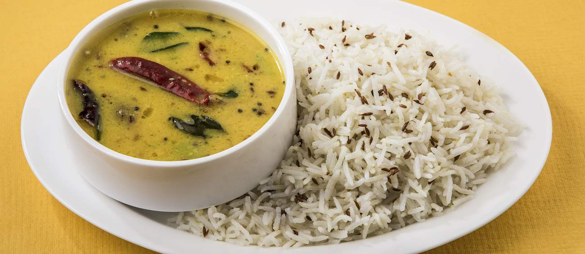

I love to sketch. I will always be ready to play any kind of games, rules doesnt matter. I try to keep myself self desciplined. I value words, so try to use them wisely.
I love eating rich food but at the end of the day a good plate of dal and chawal or we call it rice is the only difh which ultimately pleasures my senses and stomach. It doesn't have any high quality ingredients in it, but its simplicity is what maakes it a beautiful dish. Its warmth with that salty flavour and the essence of dal which is absorbed by the water it is cooked in, leads me to a heavenly experience.
| Name | Reason | Hours spent per week |
|---|---|---|
| Football | Stamina, endurance and teamwork | 8 |
| Kabaddi | flexibility, coordination and timing | 7 |
| Badminton | Self-confidence, refexes and durability | 10 |
| Swimming | Focussed Breathing, Muscle strenth and Stress reduction | 3 |
How to round off numbers in SASS and adjusting the amount of decimals?Rounding off number
/// toFixed() function in Sass
/// @author Kitty Giraudel
/// @param {Number} $float - Number to format
/// @param {Number} $digits [2] - Number of digits to leave
/// @return {Number}
@function to-fixed($float, $digits: 2) {
$sass-precision: 5;
@if $digits > $sass-precision {
@warn "Sass sets default precision to #{$sass-precision} digits, and there is no way to change that for now."
+ "The returned number will have #{$sass-precision} digits, even if you asked for `#{$digits}`."
+ "See https://github.com/sass/sass/issues/1122 for further informations.";
}
$pow: pow(10, $digits);
@return round($float * $pow) / $pow;
}